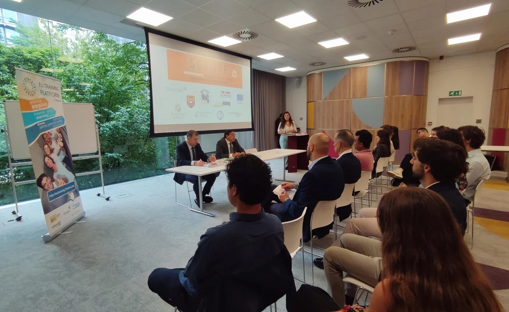
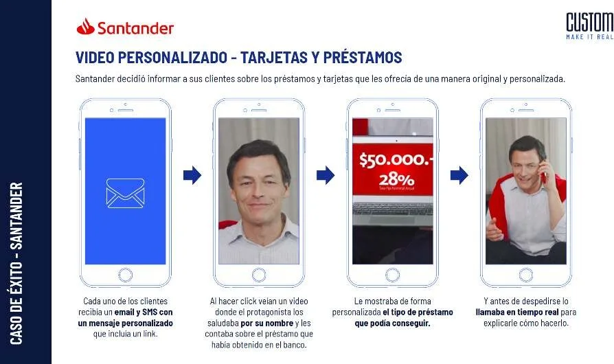

Community Applicants
Talented individuals from across Latin America and Europe seeking real-world software collaboration.
I’m Frank Escudero. I build systems that connect real human purpose with reliable engineering—from non-profit platforms and civic tech to high-throughput financial infrastructure and naval robotics.
German & Argentine dual citizen based in Frankfurt am Main. Coding and designing systems since 1996. Equal parts hands-on workshop fabricator and distributed cloud architect—zero corporate fluff, just real things that work.
01 / The Non-Profit Profile
In 2021, I founded InkuA as a non-profit civic organization to create real paths into technology for emerging developers, designers, and students worldwide through hands-on community projects, open education, and applied AI mentorship.
Talented individuals from across Latin America and Europe seeking real-world software collaboration.
Engineers, mentors, and educators working together to build open-source tools and gain production experience.
A truly borderless civic initiative bridging grassroots talent with global opportunity.
Invited speaker on cybersecurity and institutional preparedness at the European Commission Erasmus+ workshop in Brussels.
Through InkuA, we don't just talk about innovation—we pair-program, host applied AI workshops, build open tools, and help young people land their first real software roles. Technology should open doors, not build walls.
Read European SETOFF Workshop Document (PDF) ↗
02 / Systems & Scale
Over 15+ years, I’ve designed mission-critical personalized media, VoIP carrier backbones, and data pipelines built to survive real-world constraints at multi-million scale.
*VoIP cost reduction and cumulative media counts are owner-reported figures (October 2026). Not independently audited.
Personalized customer lifecycle at multi-million account scale.
Automated communication pipelines & data-driven financial journeys.
High-volume client engagement & secure cross-channel delivery.
Loyalty, onboarding & interactive multimedia flows.
Enterprise-scale client communications & automated rendering.
Interactive digital onboarding & customer retention engines.
Multi-regional financial touchpoints & dynamic video.
High-throughput mobile messaging for mass-market inclusion.
Cloud-native digital neobank acquisition & journeys.
High-value financial lifecycle & asset communication.
03 / Visual Gallery
Step through 30 verified photographs spanning naval robotics prototypes, workshop engine mechanics, non-profit community sessions, and enterprise systems.

04 / Collaboration & Dialogue
Whether you are building an ambitious technology platform, tackling complex systems architecture, or driving a non-profit mission—I’m always open to meaningful conversations.
Say Hello: frank@inkua.eu ↗